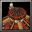

Great Hall
385
185
Primary structure, used to train Peons and receive
gathered resources. Can be upgraded to Stronghold and
then Fortress to enable the production of additional
types of structures and units.
Great Hall
Orc Housing
80
20
Provides an additional source of gold income.
Limited to 4.
Orc Housing
Pig Farm
160
40
Provides food, which increases the maximum number of
units that can be trained.
Pig Farm
Altar of Storms
180
50
Summons Heroes. Revives slain Heroes. Provides the
research Ogre-Mages to convert Ogres into Ogre-Mages.
Altar of Storms

Barracks
180
50
Primary troop production building. Trains Grunts, Troll
Axethrowers, Ogres and Catapults.
Barracks
Troll Lumber Mill
205
Serves as a drop-off point for harvested lumber.
Also contains upgrades for Troll Axethrowers.
Owning at least one Troll Lumber Mill will increase
the returned lumber from peons by 25.
Watch Tower
110
80
Defensive structure for scouting enemies. Cannot attack.
Can be upgraded to Guard Tower or Cannon Tower.
Watch Tower
Guard Tower
240
120
Defensive structure.
Attacks land and air units.
Guard Tower
Cannon Tower
300
140
Defensive structure.
Attacks land and air units.
Cannon Tower
Voodoo Lounge
130
30
Creates a shop with purchasable items. The items available
depend upon what level of upgrade your Great Hall has
(Great Hall, Stronghold, or Fortress) and which buildings
you have.
Voodoo Lounge
Orc Shipyard
160
60
Boat construction facility. Produces Orc Transport
Ships, Orc Frigates, and Orc Battleships.
Orc Shipyard
Tier 2
Stronghold
700
375
Oil:
200
Upgrade to Stronghold to enable the production of additional
types of structures and units.
Stronghold
Temple of the Damned
155
140
Trains Death Knights.
Temple of the Damned
Dragon Roost
145
140
Trains Dragons.
Dragon Roost
Goblin Alchemist
145
140
Trains Goblin Zeppelins, and Goblin Sappers.
Goblin Alchemist
Ogre Mound
135
155
Allows you to build Ogres at the Barracks.
Ogre Mound
Tier 3
Fortress
1025
565
Oil:
500
Upgrade to Fortress to enable the production of additional
types of structures and units.
Fortress
Foundry
160
60
Provides researches for ships
Foundry
Oil Refinery
50
Oil:
200
If you own at least one Oil Refinery, an additional
25 oil will be added to your stockpile every time an
Oil Tanker drops off harvested oil. Tankers can also
drop off oil here instead of at the Shipyard. Oil Refineries
must be built on a coast.
Oil Refinery
Power Generator
2000
1500
A power generator that can protect buildings nearby
by increasing their defense and life generation. It
helps you to protect your main base from being completely
destroyed by an enemy army.
Can only be built once
and has to be built in an area without hostile buildings.
Power Generator
Portal
150
150
Opens a Portal which can have another allied Portal
as destination. This helps you to connect different
locations on the map with each other avoiding enemy
troops. When the Portal is destroyed all allied Portals
which have it as destination will be disabled automatically.
When the Portal's destination is destroyed, it will
be disabled automatically.
Be careful since Portals
can be used by enemy units, too!
Portal
Research Tent
150
50
A tent for important researches. Contains upgrades
Improved Creep Hunter, Storm Protection, Temple of
Demigod Blue Prints, Improved Masonry, Improved Hand
of God, Improved Mount, Evolution, and Cheap Evolution.
Research Tent
Event House
150
50
A house to control important events.
Limited to 1.
Event House
Trading Post
50
Allows training Pack Horses which can gather gold and
lumber from your own or allied Trading Posts. This
increases your gold and lumber as well as for the allied
player.
Allows buying and selling resources other than gold
and lumber.
Trading Post
Alchemist Lab
3000
2000
Allows converting units into different races.
Limited to 1.
Alchemist Lab
Wall
80
20
A wall protects your town.
Wall
Antimagic Ward
1000
1000
Prevents enemy Reveals, Far Sight, Portal, Scroll of
Town Portal, Blink, Mass Teleportation and Staff of
Teleportation spells of enemy units in the nearby area
and adds a black mask for enemy players. Can cast Silence,
detects invisible units and is permanently invisible
itself.
Only works if built before enemy Antimagic Wards in
the area.
Antimagic Ward
Spell Book
200
100
Allows learning spells for reskillable heroes and Equipment
Bags. Contains all available spells for all 5 slots.
Use the Change Page abilities to change the listed
ones.
Spell Book
Marketplace
200
100
Sells items dropped from creeps.
Limited to 1.
Marketplace
Thieves Guild
200
100
Sells killed units from creeps and enemy players. Units
can only be purchased once and are removed from the
Thieves Guild after that. However, when they die again,
they will be readded.
Limited to 1. Does not
sell workers, citizens or summoned units.
Thieves Guild
Mounts Cage
200
100
Allows buying mounts for your heroes. Mounts are available
at hero level 20. Use the Change Page abilities to
change the listed ones. Construct a Witch Hut to modify
the abilities of your mount.
Mounts Cage
Dragon Roost
15000
15000
Allows to train all Dragons.
Limited to 1.
Dragon Roost
Armory
1000
500
Allows equipping units and heroes.
Limited to 1.
Armory
Banner Shop
100
50
Sells banners.
Banner Shop
Tier 4
Temple of Light
3000
The Eternal Guardian´s seat of power. Has different
defensive capabilities. Can learn the Magic Sentry
ability.
Attacks land and air units.
Temple of Light
Temple of Darkness
3000
The Destroyer´s seat of power. Has different offensive
capabilities. Can learn the Magic Sentry ability.
 185
185